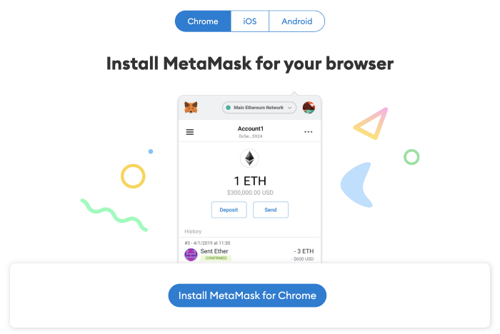
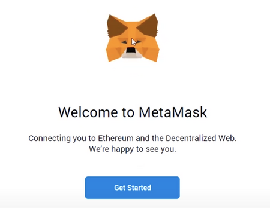
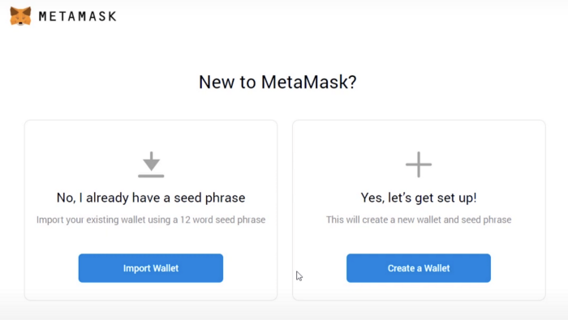
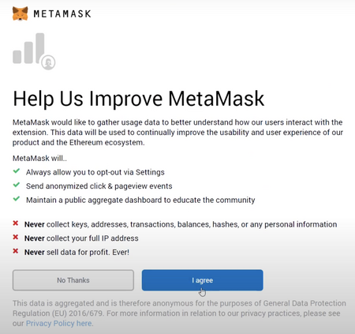
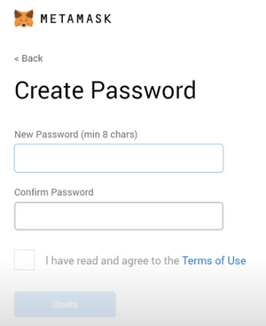
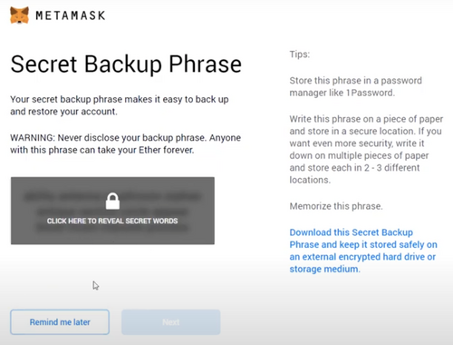
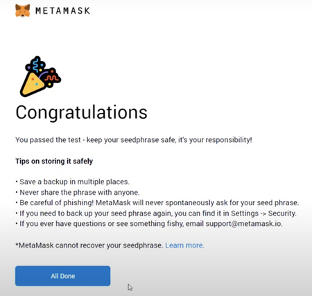

How do I interact with the blockchain?
MetaMask is a wallet interface for crypto tokens used to interact with the blockchain.
Step 1: Download the MetaMask wallet
Visit https://metamask.io/ and click „Download now”. Choose your favorite browser or mobile application and install the MetaMask extension. In this tutorial we will cover the generation of a wallet with the help of the MetaMask extension in the Chrome browser through the „Install MetaMask for Chrome” button.

Step 2: Install the MetaMask wallet
Click the MetaMask extension and click „Get Started”.

You can either import an existing wallet using the expression seed or create a new one.

Step 3: How to create a new MetaMask wallet
Click „Create a Wallet” and in the next window click „I agree” if you want to help improve MetaMask or click „No thanks” to continue.

Step 4: Create a strong wallet password

Step 5: Safely store the seed expression for the new wallet
Click „CLICK HERE TO REVEAL SECRET WORDS” to display the initial seed expression.
• MetaMask requires you to store your seed expression in a safe place. This is the only way to recover your funds in case your device crashes or your browser resets. We recommend that you write it down. The most common way is to write the 12-word phrase on a piece of paper and keep it safe in a place where only the owner has access.Note: If you lose your original expression, MetaMask cannot help you recover your wallet, and tokens will be lost forever.
• Never share the seed expression or private key with anyone or any site unless you want them to have full control over the tokens.

Click „Next”.
Step 6: Confirm the seed expression
Confirm the secret secret seed expression by clicking on each word in the order in which the words were displayed on the previous screen. Click „Confirm” to continue.

Step 7: Confirm successful wallet generation via MetaMask interface

You can now access your wallet by clicking the MetaMask icon in the upper right corner of the browser.